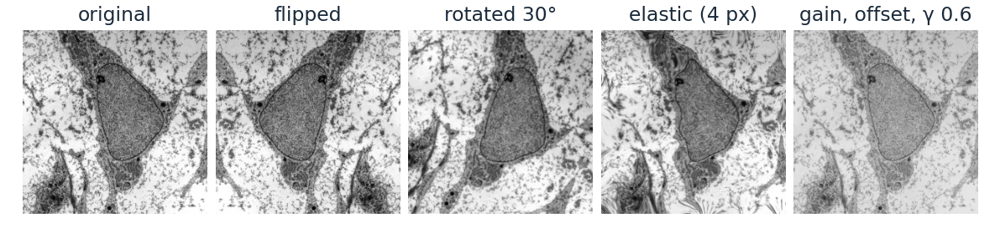
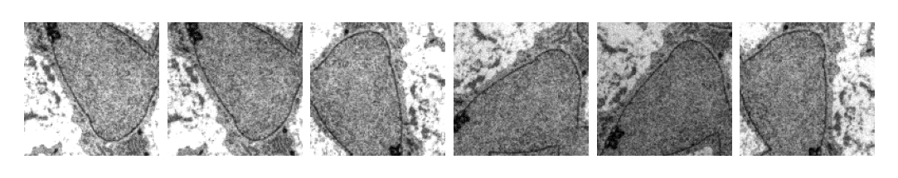
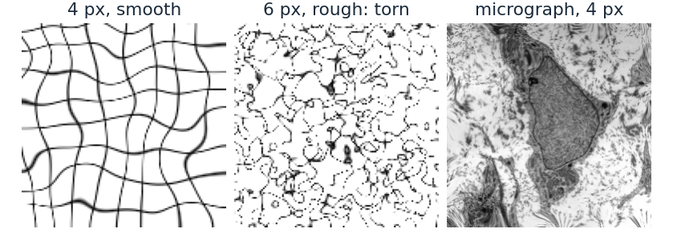
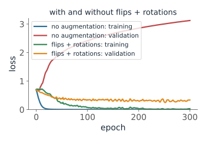
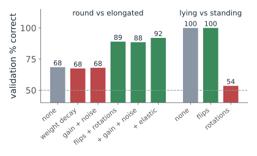

An experiment: tell round cells from elongated ones in 16\times16 crops. 20 training crops; the elongated cells in them all happen to lie horizontally. 200 validation crops: any direction, any brightness.
A small network (256 inputs, 32 hidden units, 2 outputs) learns the 20 crops perfectly within 25 epochs. On the validation crops: 68 % correct, and the validation loss climbs to 3.1.
It has learnt “horizontal bright stripe = elongated”, which is true of the training data and wrong in general.
Dropout: silence random hidden units during training.
Early stopping: keep the weights from the epoch with the lowest validation loss (evaluation day: that validation set may not be the test set).
A smaller network, or more data.
On the crop experiment these help little: weight decay 0.01 keeps the validation loss at 1.4 instead of 3.1, but still 68 % correct; early stopping keeps epoch 5 (70 %). They make memorising harder; they cannot tell the network that direction does not matter. The data has to.
The math: weight decay with Adam
Gradient descent on \mathcal L(\mathbf w) + \lambda\|\mathbf w\|^2 shrinks every weight by (1 - 2\eta\lambda) per step, plus the usual step: “decay”.
In a Bayesian reading, \lambda\|\mathbf w\|^2 is minus the log of a Gaussian prior on the weights: the trained network is the most probable one given data and prior (maximum a posteriori).
With Adam, adding 2\lambda\mathbf w to the gradient is not the same: Adam divides by \sqrt{\hat v}, so weights with large gradients are decayed less. AdamW decays directly: \mathbf w \leftarrow \mathbf w - \eta\lambda\mathbf w - \eta\,\hat{\mathbf m}/\sqrt{\hat{\mathbf v}} (Loshchilov and Hutter, 2019), the usual choice now.
Early stopping acts like weight decay for gradient descent: weights start near 0 and move away step by step; stopping early limits how far.
Augmentation: say what does not matter
Train on modified copies of each image, made anew every time it is used. The label stays the same.
Each kind of change tells the network one thing that does not matter for the task:
flips, rotations: the direction of the cell;
scale: its size (careful: see later);
elastic deformation: its exact shape;
gain, offset, gamma: brightness and contrast of the microscope;
noise, blur: camera noise, focus.


Image: transmission electron micrograph of a mesenchymal stem cell, Robert M. Hunt, CC BY 3.0, via Wikimedia Commons.
Geometric augmentations
Flips (left–right, up–down) and rotations by 90°: exact, no interpolation. Together they give 8 copies of every image.
Any rotation angle: needs interpolation (bilinear), and something for the corners that come from outside the image: mirror the border, or crop.
Scale and crop: random zoom and random crops of a larger image. Zoom changes the apparent pixel size: a nucleus of 10 µm at 0.2 µm per pixel looks like one of 15 µm after zooming by 1.5.
Translation: convolutional networks are already (nearly) shift-equivariant (convolutional networks); random crops add the rest.
Each of these is the inverse mapping of the geometric transforms of day 1: for every output pixel, look up where it comes from.
Elastic deformation
A smooth random displacement for every pixel: two fields of random numbers (one for x, one for y), blurred so that neighbouring pixels move together, scaled to a few pixels.
Two settings: the strength (how far pixels move) and the smoothness (how far apart the bends are).
Imitates the natural variation of cell and tissue shapes. The original U-Net (30 training images) relied on it.
Too strong or too rough, and cells get shapes no real cell has (demo preset “too strong”).

Intensity, noise and blur
Gain and offset: v \to a\,v + b: brightness and contrast of the microscope, laser power, exposure.
Gamma: v \to v^\gamma: a non-linear change of contrast (detector response, display settings).
Noise: add Gaussian or Poisson noise: different exposure times, cameras (camera noise).
Blur: a small Gaussian blur: slightly out of focus.
Colour (stain variation in histology): small changes of hue and saturation.
All of these change the values, not the positions: the label image (masks, points) stays as it is. For geometric augmentation of a segmentation task, the same transformation must be applied to the image and its mask (nearest-neighbour for the labels).
The math: inverse mapping and the elastic field
A transformation T maps input positions to output positions. To fill every output pixel, use the inverse: \text{out}(\mathbf p) = \text{in}(T^{-1}\mathbf p), with bilinear interpolation between pixels. A rotation by \theta about the centre \mathbf c: T^{-1}\mathbf p = R(-\theta)(\mathbf p - \mathbf c) + \mathbf c.
Elastic field: u = \alpha\,\frac{G_\sigma * n_u}{\text{rms}(G_\sigma * n_u)} with n_u white noise, G_\sigma a Gaussian; the same for v. Then \text{out}(x, y) = \text{in}(x + u(x, y),\ y + v(x, y)).
Smoothness: the blurred field is correlated over about \sigma pixels; the local stretch is about \alpha/\sigma. If \alpha/\sigma approaches 1, the mapping can fold over (no longer one-to-one): torn cells.
An augmentation T is safe when the label is invariant: y(T\mathbf x) = y(\mathbf x) (classification), or equivariant: y(T\mathbf x) = T\,y(\mathbf x) (segmentation, apply it to the mask too).
Try it: augmentations of a micrograph
Does it help? The crop experiment again
The same network and the same 20 crops, now with random flips and rotations by any angle in every epoch:
training loss falls more slowly (the task is harder), but still to near 0;
validation loss: 0.34 instead of 3.1; 89 % correct instead of 68 %.
adding gain and noise: 88 %; adding elastic deformation: 92 %.
The augmentation supplied exactly what the 20 crops lacked: elongated cells in other directions.

Try it: training with and without augmentation
The wrong augmentation helps nothing
Gain + noise only: 68 %, no better than nothing. The validation crops differ in brightness too, but the network’s real problem was direction.
Weight decay only: 68 %.
A new task: lying vs standing cells. The class is the direction. Without augmentation: 100 %. With flips: still 100 % (a flip keeps a lying cell lying). With rotations: 54 %, near guessing: the augmentation turned standing cells into lying ones with the label “standing”.
An augmentation is a claim about the task. A wrong claim makes the labels contradict each other.

Which augmentations are safe?
change
usually safe for
not when
flips
cells in culture, nuclei, tissue
handedness matters (chirality, left/right body parts, text)
rotations
cells, nuclei, organelles seen from above
direction is the measurement (orientation, flow, polarity, gravity)
scale
objects of varying size
size is the measurement, or a fixed pixel size is known: zoom only within the real range
elastic
cells, tissue
shape is the measurement (morphology classes)
intensity
most segmentation
intensity is the readout (expression level, FRET ratio)
noise, blur
robustness to cameras and focus
fine detail is the target (super-resolution, spots near the noise level)
Augment with what varies in your experiments, never with what you want to measure.
When and how to augment
After the split: augmented copies of a validation or test image in the training set are a leak (leakage unit).
On the fly: a new random copy every epoch, not a fixed enlarged data set.
Strength: start mild; check a grid of augmented images by eye (do they still look like real data?).
Test-time augmentation: predict on several flipped/rotated copies and average the (inversely transformed) predictions: a little more accurate, and the disagreement flags doubtful regions.
Augmentation helps most when data are few; with millions of images it matters less, but self-supervised learning is built entirely on it.
Augmentation in the training loop, as pseudocode
for each epoch:
shuffle the training images
for each mini-batch of images (and their masks):
for each image in the batch:
if random() < 0.5: flip image and mask left–right
angle = random angle in [−180°, 180°]
image = rotate(image, angle, bilinear); mask = rotate(mask, angle, nearest)
image = gain · image + offset, gain and offset random # image only
image = image + noise # image only
gradient step on the augmented batch
validation and test: the original images, never augmented
Summary
Idea
In one line
Small data overfit
a few thousand weights memorise 20 images
Weight decay, dropout, early stopping
make memorising harder; cannot add missing variation
Augmentation
modified copies with the same label: “this does not matter”
Geometric
flips, rotations, scale, elastic; apply the same to masks
Intensity
gain, offset, gamma, noise, blur; image only
Safe or not
never augment what you measure (direction, size, intensity, handedness)
Practice
after the split, on the fly, mild, look at the copies
Next: how to read training curves, and what they say when something is wrong.